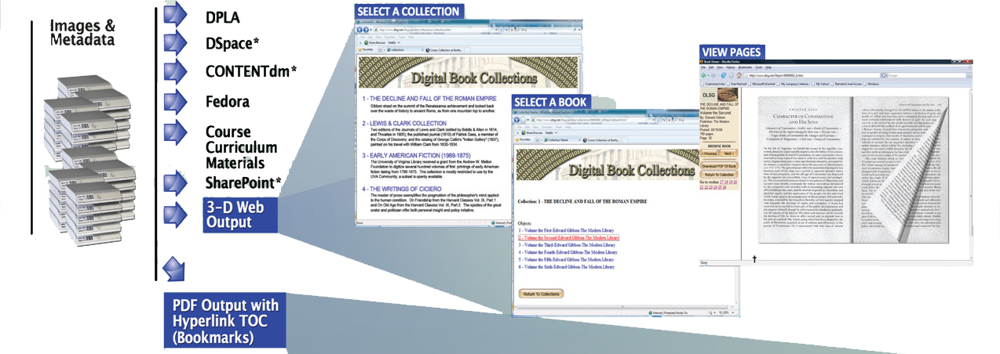
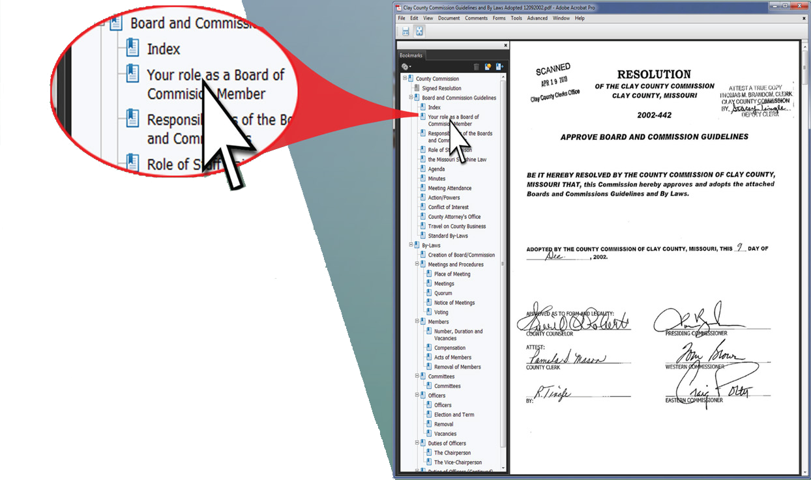

Opus Output: Image Derivatives & Metadata
Opus has a library of script files for common XML, flat file and other output formats for the metadata and associated images of digital objects (e.g. METS,MODS,Dublin Core).This script library is expandable with an unlimited number of custom formats. In addition to selecting the desired output format(s) for the metadata , the clarity , size and output formats of the images can be specified (e.g TIFF,JPEG,PDF,PNG,etc.).
DLSG staff technicals can assist in modifying existing formats and creating new custom output formats.
The most exciting and immediately usable format that Opus creates is a Web-ready output that provides the experience of browsing the virtual stacks, selecting a digital book, opening it and turning the pages; as through the printed book were in front of you.
Digital Masters
Final Destinations
 